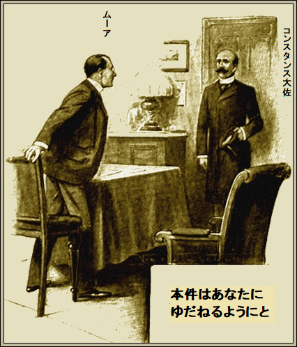

［＃改ページ］
有名な諜報員ニュートン・ムーアがうきうき気分で早々と朝食に降りてきた。今日の休日計画は決して悪くない。さらに今回の朝食だけはハラハラせず食べられる。
ふと頭の中で思い描いた光景は、クロベリへ通じるホビイ・ドライブ道やら、柔らかいピリッとくる
任務上、毎日ざっと目を通すのが、警視庁から送ってくる殴り書きの書類だ。紙に書かれた名前は各国の悪漢、任務次第で使える。ロンドンに潜伏する異国のならず者をあれこれ知っていれば、捜査上おおいに役立つことがよくある。
ほとんど無意識に数名を暗記した。誰も使う予定はないけど、
「休暇どころじゃない、これは絶対警察案件じゃないなあ。今にも呼びつけられるぞ」
ムーアの生活を一変させる記事が大見出しで踊っていた。
「外務省で変事」
「ゴードン・メイン次官殺害か」
昨夜遅く、我社の情報によれば、外務省のゴードン・メイン事務次官が執務室で残酷に殺害されているのが発見された由。状況から、不運に見舞われた次官は夕食後、重要書類を緊急処理するために執務室に「ゴードン・メイン次官殺害か」
ムーアはテーブルを片づけて、警視庁提供の名簿を熱心に調べ始めた。直感どころか、事件に巻き込まれようとしていた。
だから、元刑事部秘書がコンスタンス大佐の訪問をうやうやしく告げても、ちっとも驚かなかった。
「ペインタ君、すぐ通してくれ、あの休暇の私服は着られない。当分クロベリには行けない。運が悪い」
ペインタ秘書がお辞儀して下がった。少々のことには慣れっこだった。
コンスタンス大佐が青白い顔で、興奮してやってきた。
「ここへ真っ直ぐ参りましたのは、外務大臣と打ち合わせた結果、この凶悪事件をあなたにゆだねるべきと判断されたからです。大臣は時間が

「さすが大臣。本件は私の畑ですか」
「その通りです。昨夜メイン次官が執務室へ戻った理由は英独協定書の素案をスコットランドに居る首相に送らねばならなかったからです。この協定書は一見商業的なものですが、欧州の将来に重要な意味があります。言うまでもないですが、ロシアやフランスは素案を知るためなら金を惜しみません。いま電信が首相から来ましたが、メイン次官からの手紙は受け取っておらず、素案もどこにも見当たらないとのことでした。ここに殺人の動機と理由があります。あなたの任務は素案を探し出すことです」
ムーアがしばらく考え込んだように見えた。
「当然警察が調べているのでしょう？」
「もちろんです。あなたにも役立ちます。でも警察は協定書のことは何も知らないし、三人組のことも知りません」
「三人って、どこで分かったのですか」
コンスタンス大佐が一枚の紙を見せた。弱々しい字で、三つの単語が書かれていた。
三人組
大佐の説明によれば、ゴードン・メイン次官が書いたものだという。
ムーアが思慮深く、
「いい見立てですね。私の所へいらしたのは正解です。本件に関わる悪党組を全て知ってるからです。実行犯を四人ほど特定できるかもしれません。ほかに何か」
大佐がポケットからバラの花を取りだした。赤いバラだが、なかば茶色に変色し、干からび、しおれていた。
「どこで手に入れたのですか」
「けさメイン次官の部屋でテーブルの下から見つけました。部屋で草案書類を探しているとき見つけました。役立つ機会があるかもしれません」
ムーアの目が輝いた。
「大いに助かります。このしなびた茶色の花びらが重要なことは言うまでもありません。もちろん今は考えているだけですけど、もし私がパリにいたら、必ずやシャレを捕まえて、ゴードン・メイン次官殺人ほう助罪で告訴してやりますよ」
「その名前はなんか聞いたような気がしますね」
と大佐がつぶやいた。
ムーアが説明した。
「シャレは派手なやり手の悪党です。鼻が利き、果実を嗅ぎつけるのです。誰よりも欧州の反体制を熟知しています。現在、
「それとバラと何の関係があるのですか」
「大佐、全てにですよ。組織の記章なんです。ゴードン・メイン次官はとても質素な男で、自室など飾りませんから、バラは殺人犯のものです。知っての通り三人組です。間違いなく残党も赤いバラをつけています。探す三人組はシャレの雇われ者です」
「もう英仏海峡を渡ったかもしれませんね」
「それはないですよ、大佐。どの港も二、三日監視されますから。奴らは来週いっぱいロンドンに隠れているでしょう。たぶん草案は暗号でしょう」
「ええ。でもシャレほどの男なら暗号など簡単でしょう」
「草案が手に入れば解くでしょう。奪い返す計画をよく練らなければなりません。さて、出かけて殺人犯の一人とおしゃべりしますか」
大佐がムーアの眼鏡を覗き込み、驚いて、
「あなたがはったりを噛ませるとは知りませんでした」
「そうじゃないですよ。私は英国在住の不良外人をよく知っているのです。この一覧表の一人に会いたいのです。必ず欲しい情報が得られます」
ムーアがベルを鳴らすと、愚直なペインタ秘書が現れた。名前と住所が、警視庁提供の紙に書いてあった。
「レバスティアを知ってるだろ。よろしい。その住所だ。行って見つけろ。そこへ着いたら探し出して、緊急便を使い、居場所を暗号で知らせろ。直ちに出発だ、ペインタ君」
ペインタがお辞儀して出発した。二時間ほどして、辻馬車が通りに到着し、元気のいい伝令少年が舗道を走ってきた。ムーアが一見不可解なメモを受け取り、解読した。
レバスティアは現在ユニバーサルカフェでドミノゲーム中。しばらく居る模様
少し経って、ムーアが当該のカフェにふらっと入った。ほとんど男ばかり、数ヶ国語で騒然とし、大理石のテーブルでドミノ
見知らぬ対戦相手が首を左右に振って、立ち上がり、バカ丁寧にお辞儀して、席を離れた。レバスティアが周りを見渡し別なカモを探した。誰も相手をしそうにない。ふっとため息をついて、煙草を投げ捨て、瞑想にはいった。
ムーアが近づいて、肩に触れ、穏やかに言った。
「おや、キミはイギリスに入国禁止のはずだったと思うが。お忘れかな、英国の刑務所は虚弱体質に合わないよ」
レバスティアはぼうっと立ちあがったが、不意にドスンと尻もちをついたものだから、帽子が床に転がり落ちた。
フロックコートを着ており、帽子と靴は極上品だ。だが
「うろたえたようだな。何か
レバスティアが口ごもって、
「
と軽い嫌みに身もだえた。
「おう、混乱して、いつもの鋭い勘が
ムーアがポケットから、しおれたバラの花を取りだした。案の定、レバスティアのボタン穴の枯れ茎にぴったり合った。ちょっとした幸運だが、幸運というものは最高の
「キミ、お
「い、言えるわけない」
とレバスティアが口ごもった。
「俺は言えるぜ。見つけたのは昨夜殺された男の部屋だよ。もし俺が警官に、ゴードン・メイン次官の殺人犯が居ると言ったら、お前の面白い人生も、ロープの端で終わりだ。ここへ来たのは偶然じゃないぞ。お前をつけていたんだ。ゆうべあの事務所にいたことはバレバレだ。ほかの二人はどこだ？」
レバスティアが息をのんだ。この男は悪魔に違いない。こんなに鋭い明敏な男に下手な言い逃れは通じない。
「レステルとダロンと別れたのは……」
とレバスティアがもぐもぐ。
ムーアは、ほかの二人の暗殺者をはからずも知り、はずむ気持ちを抑えて、
「別れたのはゆうべだろ。残らず吐け。シャレや残党も全部知ってる。言うまでもなく、にせ
またしてもレバスティアが口ごもった。涙のようなものが悪漢の目に浮かび、体がぶるぶる震えたのはアブサン酒のせいじゃない。かつてこれほど運に見放されたことはなかった。
「三人全員です」
とレバスティアが緊張して、かすれ声で白状した。
ムーアがニヤリ。意味が完全に分かった。
「仲間を信用してないな。あの草案はとても価値がある。三つに裂いて、時を見計らい、シャレに渡すつもりだな。お前の分を渡せ」
レバスティアが二片の紙を渡すさまは、さながらよく訓練されたスパニエル犬だ。まだ持ってないかと
「ほかの二人はどこだ？」
とムーアが問うた。レバスティアが両肩をすくめた。
最大の敬意を払い、全然知らないという。自分の役割を実行しただけだし、やり残した仕事は、この不意打ちで失敗したが、シャレに都合がつき次第、草案の三分の一を渡す予定だった由。
「本当のことを話しているようだな。やっと吐いたが、手渡す寸前だった。さあ、行きたけりゃ行け。当分お前に用はない。だが常時監視する。もし、レステルやダロンと何らかの方法で連絡しようとすれば逮捕する。警告したぞ」
こうしてムーアは勝ち誇って出て行った。だが決して勝者じゃない。まだやるべきことがたくさんある。残り二人の悪党を速やかに追わねば、任務は完全に失敗する。捕まえる前に奴らがシャレの所へ行けば、今の成功などむなしい。
ムーアの経験で、奴らのような人間はお互いを信用しない。逆のことが言えないこともないが、今回のレバスティアとの会話は盗聴されたかもしれない。
帰り路、考え込んで、気分がすぐれなかった。
午後の大半を費やしたのは電報の送受信だった。信頼できる諜報員をパリに抱えており、本件に関して、ムーアの指示で活動していた。シャレの
一つの慰めが、次の二日間にあった。集めた情報から確実に、レステルとダロンのどちらも英仏海峡を渡ってない。
かなりお金のかかる諜報活動であるが、シャレの邸宅から出入りするどんな手紙もすべて、パリにいるムーアの代理諜報員が、中身を徹底的にチェックする。
ムーアがつぶやいて、
「シャレの通信を調べる手当として、一日当たり二千五百ドルはちょっと高いなあ。だが金はけちらない。パリ警察の手助けが得られたらなあ」
でもこれはできない。レステルとダロンをカレーかディエップで逮捕して尋問するのは難しくないが、草案はすぐ解読され、数時間でフランス政府が内容を知るだろう。
今のようにシャレのたくらみは放置しておいた方がよいだろう。いや駄目だ、あの二人を監視して、草案は
ムーアが巻煙草を作り、思案げに吸った。長い間、椅子に寄りかかり、
レステルとダロンがパリに直行したらすぐ分かるはず。各駅で見張っている。しかし次の手は使えないだろう。悪党どもを襲撃して、力ずくで草案を奪う案だ。この手を使えば、フランス政府に何もかもばれる。
「パリで奴らを引っかける方法を何か考えなくては」
とムーアが独り言。
もう一本吸った。いくつもの計画が浮かんでは複雑すぎて消えた。
俊敏な脳は無駄な空回りをしない。妄想の翼に乗って案が浮かんだ。
以前聴いたことがあるような案だが、小説の借り物ではない。飛び上がって叫んだ。
「完璧だ。見事なほど単純だ。シャレですら、詐欺師のカモになったと気づくまい」
ムーアがベルを鳴らすと、ペインタ秘書がはいって来た。
「今晩パリへ渡るぞ。牧師に変装する。牧師なら大いに尊敬される」
もしすべてがうまくいけば、輝かしい大成功が見られるだろう。なにしろ考え尽したのだから。まあ事故が起こらない限り、失敗しないだろう。
数時間後、ユーロップ通りの小さな事務所に上がって行った。そこでパリの協力者である諜報員が仕事している。温和で冷たい目付きの小男が不審そうに見上げた。
「牧師さん、何か御用ですか」
とぶつぶつ。
「分からないだろシャボー君。この変装は実にいい」
とムーアが地声で答えた。
サディ・シャボー諜報員が
「お見えになるとは思ってませんでした。電報を受け取ってから、てっきり英国でレステルとダロンを逮捕されるのかと思っていました」
「通常であればそうするのだが、よく考えた結果、奴らの本拠地で捕まえることにした」
「でも、ここの警察に支援は頼めませんよ」
ムーアが自分で煙草に火をつけて、
「承知の上だ。最大の不運が起こるとしたら、ダロンとレステルがパリ警察に捕まることだ。そうなれば貴重な草案は二度と見られないだろうし、どんな災いが起こるか、誰も分らない。しかし、ひとたびあの書類を手に入れれば、すぐにゴードン・メイン次官殺人犯は警察に渡す。手はずを整えるまで、警察が動かないでくれたらいい」
「もちろん秘策があるんでしょう？」
「あるよ、しかもとてもいい策だ。今は詳しく言えないがシャボー君、レステルとダロンはおとなしく書類を手放す。しかもシャレは抗議できず傍観するだろう」
シャボー諜報員がうなずいてほほ笑んだ。自分も策士だが、ムーアはそれ以上だ。
「どんなものか、そのとき立ちあわせてくれませんか」
「君に芝居の重要な役を演じてもらいたい。男を三人手配してくれないか。命令に従順で、しかも絶対信頼できる人物だ」
シャボーが煙草の灰を振り落とした。ウィンクしてポケットをたたいて、
「あなたは太っ腹です。すべては金がものを言います。それぐらいおまかせください」
「よろしい。直ちに男どもを連れてこい。そして全員を身体測定しろ。皆に制服を着せようと思っとる。仕立てたら、毎晩八時にここへ集合させろ。期間は作戦に必要な間だ」
シャボーの目が一瞬輝いた。奇妙な命令だが、謎はシャボーの好むところ。
ムーアが続けて、
「打ちあわせ終了だ。万が一の場合、レバスティアを些細な罪で逮捕して、二、三日動けなくする。まもなくレステルとダロンがパリにつくだろう。奴らはお互いを信用しないから、おそらく一緒に来る。レバスティアには会えないから、かえって不安になってあの書類をすぐ処分するだろう。君なら悪党二人をパリに入れることはあるまいし、奴らの居場所を見逃がすこともあるまい？」
シャボーは最後の言葉を確実に請け合った。ムーアが指示したように、経費はけちらない。
奴らがパリに入場する道という道をじっと見張る男どもは、実務に通じ、しかもレステルとダロンの顔を知っている。到着すれば一時間以内に、昼夜を問わず、シャボーが知る。この種の仕事はシャボーに勝るものはない。
ムーアが続けて、
「そうか、とにかく安心した。ところでシャレは今どうしている。何か新しい商売でも？」
シャボーが答えて、
「いまどんなことをしているか知りません。ご存知のようにシャレは現在紳士的に順法者然としています。リュー・ド・ラペ通りにある豪華なホテルに
「欧州ごろつきの半分かい？」
「そんなもんじゃありません。シャレは盛んに商売していますが、相手は大勢の悪党です。間違いなくあなたに関係する事件はあそこで
「知ってる。続けろ」
とムーアがぶっきらぼうに言った。
「ええ、シャレの住まいは現在、
「俺もだ。接待は何だ？」
「大方は賭け事です。いかがわしい素姓の女も二、三人いますが、ほとんど男です。大金を賭けます。ロシアの友人が政治目的でそこへ行きますが、話によれば、ひと勝負でテーブルに三〜四万フラン見ることも珍しくないそうです」
ムーアの目が輝いた。これで目星がついた。
「賭け事なら成功間違いない。すぐに男どもを集めろ。身体測定を忘れるな」
一時間も経たず、シャボーが命令通りに実行した。その一時間以内にムーアがパリの軍服店に手付金を前渡し、明日までに服を仕上げれば金に糸目はつけないと約束した。
翌日は何事も起こらなかった。次の晩、ムーアがお気に入りのカフェで夕食を取っていると、シャボー諜報員がやってきた。目の輝きだけで興奮がわかった。
「奴らが来ましたよ。ほんの一時間前にパリ北駅に着きました。両替後シャレのホテルへ向かいました。数分後に到着します」
ムーアが皿を脇にどけた。そのときがやってきた。食事どころじゃない。
「すぐに男どもを連れてこい」
「すでに私の事務所で待機しています」
「よろしい。じゃあ急げ。ひと芝居打つばかりだ。今晩寝る前にはあの書類を取り返すぞ」
皆で
一時間後、長い外套とツバ帽子の男どもが五人、暗闇を利用して忍び寄った。やがて目的地に着いた。ムーアがホテルの扉をあけて、ずんずんはいって行った。
ずる賢い悪党のシャレはいま定期的に開く酒宴に興じていた。
ホテルの装備は豪華だ。電灯がいたるところに輝いている。まだ広々とした部屋はまばらで、男どもは煙草を吸ったり、冷えたシャンパンを飲んでいる。シャレは男どもの間を回り、客とお互いに冗談を交わしていた。
大柄で快活な男がシャレだ。
着飾った給仕が二、三人で長い台の上を片付けて、トランプの箱をばらまいた。次第にきらびやかな部屋が埋まってきた。
シャレはどの来客にも目をかけ言葉を交わしているようだが、扉へちらちら眼を向け、気にしている。
急に陽気な会話をやめ、びくっとしたのは今しがた入室した二人の男に目が向いたときだった。二人ともシミ一つない夜会服を着て、ボタン穴に赤いバラを付けていた。
シャレがつぶやいて、
「来たか、遂に。あきらめかけていたが……」
シャレは会話を中断し、扉へ近づいた。新顔に大げさに挨拶し、ほほにキスをして言った。
「夜の楽しみは完璧だよ。うまく行ったか？」
背の高い方の男がうなずいた。小柄な連れが笑みを浮かべ、胸のポケットを意味深にたたいた。
ダロンが話し手となって、
「すべて氷を滑るようにうまく行きました。残念ながら暴力を使いましたが」
シャレがそっと、
「ああ、読んだ。死によった。証拠は残さなかっただろうな」
絶対ないとレステルが答えて、ニヤリ笑った顔はひどいものだ。
「協定書は三分割しました。レバスティアはまだ来てませんか」
シャレが軽蔑して、
「レバスティアはいつも遅れる。もう一週間隠れるつもりだろう。臆病者めが。ところで書類は？」
シャレがとても物欲しそうに
レステルは笑って、答えようとしない。
「あとですよ、シャレさん。客が去ったあとで、取引して、金をもらいましょう」
レステルはぶらぶらカード台を巡り、ダロンもついてきた。シャレもほかにやることがないので従った。
この頃になると、賭けが激しくなってきた。シーンと静まりかえった静寂を破るのはカードを切る音、金貨のチャリン音、紙幣の擦れる音のみであった。賭けてない者ですらゲームに注目した。
「一万フラン賭ける」
と男がかすれ声で告げた。
男が勝った。ざわめきがテーブルの周りで起こった。
そのとき扉が静かに開き、警官服の男が五人そっと侵入した。扉を静かに閉め、鍵をカチャリとかけた。
極度に緊張して張りつめた神経には、カチャリ音ですら銃声に聞こえた。十人ばかり振り向いた。
シャレが暖炉につんのめって、叫んだ。
「サツだ。明かりを消せ」
怒号が
「動くな、全員だ。動くな、さもないと撃つぞ。命令に従え、そうすれば害はない。もし拒めば……」
意味深だ。明らかに小男の警官は冗談を言ってない。拳銃をピタリ向けた。
警官が鋭く、
「テーブルの金とカードを集めて、全て袋に入れろ。それから全員の名前と住所を言え」
シャレが怒って前に進み出て、詰問した。
「何の容疑だ？」
「賭博条例違反だ。明日、ル・メゾン通りの尋問判事の所へ出頭しろ。いま、ここで全員を調べる」
シャレがいら立って文句を言った。間違いなく罰金は重い。だがあせる理由はあの二人がばれないかだ。
レステルとダロンが扉の方へにじり寄った。言うまでもなく二人は他の誰より監視されていた。
警官が叫んで、
「二人逃げようとしている。確保しろ。そこの二人と責任者を真っ先に調べよ」
「不当だ。議会に言いつけるぞ。腰ぬけども、耐えられるか」
とシャレが叫んだが、激怒もむなしかった。
皆が不穏な動きをした。かっとなったり、いきり立ったり、やけくそで抵抗したが、武装警官に歯向かうのは論外だ。
抗議や悪態にもかかわらず、シャレ、レステル、ダロンが控室に引っ張られ、閉じ込められた。三対三になり、警官の一人が拳銃を構えて仁王立ちしている。
シャレが、
「さっさとやれ。手間を取らせやがって」
むなしくレステルと仲間が弁解、抗議した。もし黒光りする拳銃がなかったら、手向かっただろう。
今まで黙っていた細身の眼鏡警官が三人の上着を脱がせた。胸ポケットの紙きれを見つけ、多少無頓着に調べ始めた。
と同時に、湧きあがる歓喜の叫びをぐっとこらえた。震える手で、紙きれをたたみ、公式に
警官隊の指揮官が意味ありげに目くばせして、首を縦に振り、
「キミは部屋へ戻ってよし。残りの二人もすでに書類を全て出したようだから、別室の警官の手間が省けた」
指揮官がきびきび言った通り、平穏に終わった。
少し時間をおいて、三人の平警官は道化服を馬車で脱いだあと、戦利品と共に消えた。
「お客様を退出させてよろしいですか」
とシャレが皮肉っぽく
冷静な返事があった。
「かまわん。全員の名前と住所は控えた。命令通り、明日出頭するように。それから気の毒だが不愉快な目に合わせた。ゆっくり休んでくれ」
指揮官が威張って退出し、眼鏡のやせた部下も続いた。
二人は無言で、薄暗い脇道へはいった。それからお互いに目を会わせて、大笑いした。
「芝居はどうでしたか、ムーアさん」
とシャボーが
「君も立派にやってくれたよ。思えば、ばかばかしいほど単純な芝居だった。ただ警官を演じて、いかがわしい
ムーアが意味深にポケットをたたいた。煙草をふかし、ほんとに嬉しそうだった。
「金貨とかき集めた札束はどうしました？」
とシャボーが訊いた。
「ああ、シャレの酒蔵にほうり込んだ。おそらく誰かに分捕られるだろう。確かなのは奴ら、あした判事の所に来ないってことだ。レステルとダロンは今頃パリからトンずらだろう。奴らは警察命令だと信じたから、居残らない。さてと、もう黙ってる必要もないから、警察に追わせよう。刑事の追跡に期待するとしよう」
シャボーがくすくす笑って、
「必要ありませんよ。パッと思いついて、奴らがあの書類を手放すとき怖がったから、私の方で私服を二人つけて追わせました。刑事が
「シャボー君はお利口だ」
シャボーが赤面しながら、
「あなたほどじゃありませんよ。あなたのすばらしい業績の中でも、これほど
ゴードン・メイン次官殺人犯が捕まり、罪の償いを受けたことは誰もが忘れないだろう。
警察が手際よく動いたとされるが、一般大衆に関する限り、赤いバラの逸話があったことや、悪名高い三人組を実際に急襲したのが偽警察だったことなど、いま初めてここに明らかにされるものである。
了